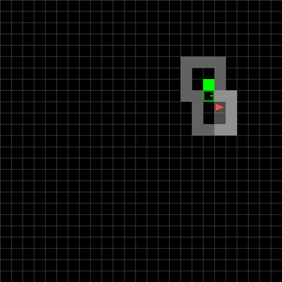

Finding the way through
Curriculum-trained PPO and Dueling Double DQN navigate two-, four-, and six-room MiniGrid mazes.
Agent replay
Recorded agents

How it works.
See only part of the map
The agent observes a small local grid, while layouts and doors change between episodes.
From the original project.
Saved artifacts · click to inspect
Original artifact ↗
Original artifact ↗

Original artifact ↗

Original artifact ↗

Continue in the source.
Open the source notebook in Jupyter, Colab, or the environment described in the README. Data and model downloads may be required.
git clone https://github.com/eforus-overseer/RL-MiniGrid-PPO-Agent.gitProject artifacts.
notebooks/d3qn_evaluation.ipynb ↗notebooks/ppo_evaluation.ipynb ↗notebooks/ppo_training.ipynb ↗report.pdf ↗
Source links point to the original public repository. Credit belongs to the project authors and the dependencies credited there.